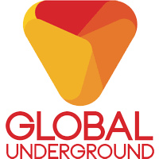

홈 > 브랜드 매거진 > Kompakt
Kompakt
콤팍트(Kompakt)는 1998년 독일 쾰른에서 설립된 일렉트로닉 음반 레이블이자 유통사다. 미니멀 테크노·마이크로하우스를 대표하는 독립 레이블로, 'Total' 컴필레이션 시리즈로 알려졌다.
산업 분야 미디어·엔터테인먼트 · 공개 등급 디렉토리 · 브랜드 평가 3.2 ★
한눈에 보는 브랜드
콤팍트(Kompakt)는 1998년 독일 쾰른에서 설립된 일렉트로닉 음반 레이블이자 유통사다. 미니멀 테크노·마이크로하우스를 대표하는 독립 레이블로, 'Total' 컴필레이션 시리즈로 알려졌다.
브랜드 관점
콤팍트는 미니멀 테크노·마이크로하우스를 정의한 독일 쾰른의 대표 독립 레이블이다. 설립·운영 주체, 주력 장르, 대표 아티스트를 함께 보면 미디어·엔터테인먼트 안에서의 위치가 또렷해진다.
시작과 성장
음반 매장(1993)에서 출발해 1998년 볼프강 보이크트, 미하엘 마이어, 위르겐 파페가 레이블을 설립했다. 미니멀 테크노 흐름을 이끌며 유통·이벤트까지 아우르는 쾰른 사운드의 거점이 됐다.
브랜드 아이덴티티
Kompakt의 아이덴티티는 브랜드명, 로고 사용 여부, 업종 언어, 국가적 배경을 중심으로 정리됩니다. 공개 로고 자산은 추후 권리 확인 후 보강할 수 있도록 텍스트 메타데이터 중심으로 관리합니다.
확장 지식
쾰른 기반 독립 레이블로 'Total' 컴필레이션으로 미니멀 테크노를 대표한다.
제품과 서비스
테크노·하우스·일렉트로닉 음반을 발매한다. 구이 보라토, 슈퍼피처와 'Total' 시리즈가 대표적이다.
사람들
볼프강 보이크트·미하엘 마이어·위르겐 파페가 1998년 설립했다.
현재 상태
타임라인
정리된 연도형 이벤트가 없습니다.
BI/CI 변천사
함께 읽을 브랜드
미디어·엔터테인먼트 · 디렉토리Minus 미디어·엔터테인먼트 · 디렉토리DJM Records
미디어·엔터테인먼트 · 디렉토리DJM Records 미디어·엔터테인먼트 · 디렉토리5 Minute Walk
미디어·엔터테인먼트 · 디렉토리5 Minute Walk
마이너스(Minus, m_nus)는 1998년 테크노 아티스트 리치 호틴이 설립한 미니멀 테크노 레이블이다. 캐나다 윈저와 독일 베를린을 기반으로 한 아티스트 운영...
Mi
Mille Plateaux
미디어·엔터테인먼트 · 디렉토리Mille Plateaux밀 플라토(Mille Plateaux)는 1994년 아힘 셰판스키가 독일 프랑크푸르트에서 설립한 실험 일렉트로닉 레이블이다. 글리치 음악을 대표하는 레이블로 'Cli...
0E
0711 엔터테인먼트
미디어·엔터테인먼트 · 디렉토리0711 엔터테인먼트0711 엔터테인먼트는 독일의 미디어·엔터테인먼트 브랜드로, 콘텐츠 포맷, 팬덤, 채널 운영, 지식재산권 확장이 함께 작동하는 영역입니다.
미디어·엔터테인먼트 · 디렉토리DJM RecordsDJM 레코드(DJM Records)는 1969년 영국에서 음악 출판사 딕 제임스 뮤직 산하로 만들어진 음반 레이블이다. 엘튼 존의 초기 영국 음반을 발매한 것으로...

미디어·엔터테인먼트 · 디렉토리Global Underground글로벌 언더그라운드(Global Underground)는 1996년 앤디 호스필드와 제임스 토드가 영국 뉴캐슬에서 설립한 댄스 음악 레이블이다. DJ 믹스 컴필레이션...
10
105music
미디어·엔터테인먼트 · 디렉토리105music105music는 독일의 미디어·엔터테인먼트 브랜드로, 콘텐츠 포맷, 팬덤, 채널 운영, 지식재산권 확장이 함께 작동하는 영역입니다.
24
2419 Record Label
미디어·엔터테인먼트 · 디렉토리2419 Record Label2419 Record Label는 네덜란드의 미디어·엔터테인먼트 브랜드로, 콘텐츠 포맷, 팬덤, 채널 운영, 지식재산권 확장이 함께 작동하는 영역입니다.
미디어·엔터테인먼트 · 디렉토리5 Minute Walk5 Minute Walk는 미국의 미디어·엔터테인먼트 브랜드로, 콘텐츠 포맷, 팬덤, 채널 운영, 지식재산권 확장이 함께 작동하는 영역입니다.